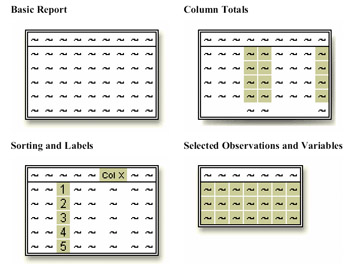

Overview
Introduction
To list the information in a data set, you can create a report with a PROC PRINT step. Then you can enhance the report with additional statements and options to create reports like those shown below.
Objectives
In this chapter you learn to
- specify SAS data sets to print.
- select variables and observations to print.
- sort data by the values of one or more variables.
- specify column totals for numeric variables.
- double-space SAS listing output.
- add titles and footnotes to procedure output.
- assign descriptive labels to variables.
- apply formats to the values of variables.
Types of Reports
Basic Report
You can easily list the contents of a SAS data set by using a simple program like the one shown below.
libname clinic 'your-SAS-data-library'; proc print data=clinic.admit; run;
| Obs | ID | Name | Sex | Age | Date | Height | Weight | ActLevel | Fee |
|---|---|---|---|---|---|---|---|---|---|
| 1 | 2458 | Murray, W | M | 27 | 1 | 72 | 168 | HIGH | 85.20 |
| 2 | 2462 | Almers, C | F | 34 | 3 | 66 | 152 | HIGH | 124.80 |
| 3 | 2501 | Bonaventure, T | F | 31 | 17 | 61 | 123 | LOW | 149.75 |
| 4 | 2523 | Johnson, R | F | 43 | 31 | 63 | 137 | MOD | 149.75 |
| 5 | 2539 | LaMance, K | M | 51 | 4 | 71 | 158 | LOW | 124.80 |
| 6 | 2544 | Jones, M | M | 29 | 6 | 76 | 193 | HIGH | 124.80 |
| 7 | 2552 | Reberson, P | F | 32 | 9 | 67 | 151 | MOD | 149.75 |
| 8 | 2555 | King, E | M | 35 | 13 | 70 | 173 | MOD | 149.75 |
| 9 | 2563 | Pitts, D | M | 34 | 22 | 73 | 154 | LOW | 124.80 |
| 10 | 2568 | Eberhardt, S | F | 49 | 27 | 64 | 172 | LOW | 124.80 |
| 11 | 2571 | Nunnelly, A | F | 44 | 19 | 66 | 140 | HIGH | 149.75 |
| 12 | 2572 | Oberon, M | F | 28 | 17 | 62 | 118 | LOW | 85.20 |
| 13 | 2574 | Peterson, V | M | 30 | 6 | 69 | 147 | MOD | 149.75 |
| 14 | 2575 | Quigley, M | F | 40 | 8 | 69 | 163 | HIGH | 124.80 |
| 15 | 2578 | Cameron, L | M | 47 | 5 | 72 | 173 | MOD | 124.80 |
| 16 | 2579 | Underwood, K | M | 60 | 22 | 71 | 191 | LOW | 149.75 |
| 17 | 2584 | Takahashi, Y | F | 43 | 29 | 65 | 123 | MOD | 124.80 |
| 18 | 2586 | Derber, B | M | 25 | 23 | 75 | 188 | HIGH | 85.20 |
| 19 | 2588 | Ivan, H | F | 22 | 20 | 63 | 139 | LOW | 85.20 |
| 20 | 2589 | Wilicox, E | F | 41 | 16 | 67 | 141 | HIGH | 149.75 |
| 21 | 2595 | Warren, C | M | 54 | 7 | 71 | 183 | MOD | 149.75 |
Column Totals
You can produce column totals for numeric variables within your report.
libname clinic 'your-SAS-data-library';
proc print data=clinic.admit;
sum fee;
run;
| Obs | ID | Name | Sex | Age | Date | Height | Weight | ActLevel | Fee |
|---|---|---|---|---|---|---|---|---|---|
| 1 | 2458 | Murray, W | M | 27 | 1 | 72 | 168 | HIGH | 85.20 |
| 2 | 2462 | Almers, C | F | 34 | 3 | 66 | 152 | HIGH | 124.80 |
| 3 | 2501 | Bonaventure, T | F | 31 | 17 | 61 | 123 | LOW | 149.75 |
| 4 | 2523 | Johnson, R | F | 43 | 31 | 63 | 137 | MOD | 149.75 |
| 5 | 2539 | LaMance, K | M | 51 | 4 | 71 | 158 | LOW | 124.80 |
| 6 | 2544 | Jones, M | M | 29 | 6 | 76 | 193 | HIGH | 124.80 |
| 7 | 2552 | Reberson, P | F | 32 | 9 | 67 | 151 | MOD | 149.75 |
| 8 | 2555 | King, E | M | 35 | 13 | 70 | 173 | MOD | 149.75 |
| 9 | 2563 | Pitts, D | M | 34 | 22 | 73 | 154 | LOW | 124.80 |
| 10 | 2568 | Eberhardt, S | F | 49 | 27 | 64 | 172 | LOW | 124.80 |
| 11 | 2571 | Nunnelly, A | F | 44 | 19 | 66 | 140 | HIGH | 149.75 |
| 12 | 2572 | Oberon, M | F | 28 | 17 | 62 | 118 | LOW | 85.20 |
| 13 | 2574 | Peterson, V | M | 30 | 6 | 69 | 147 | MOD | 149.75 |
| 14 | 2575 | Quigley, M | F | 40 | 8 | 69 | 163 | HIGH | 124.80 |
| 15 | 2578 | Cameron, L | M | 47 | 5 | 72 | 173 | MOD | 124.80 |
| 16 | 2579 | Underwood, K | M | 60 | 22 | 71 | 191 | LOW | 149.75 |
| 17 | 2584 | Takahashi, Y | F | 43 | 29 | 65 | 123 | MOD | 124.80 |
| 18 | 2586 | Derber, B | M | 25 | 23 | 75 | 188 | HIGH | 85.20 |
| 19 | 2588 | Ivan, H | F | 22 | 20 | 63 | 139 | LOW | 85.20 |
| 20 | 2589 | Wilicox, E | F | 41 | 16 | 67 | 141 | HIGH | 149.75 |
| 21 | 2595 | Warren, C | M | 54 | 7 | 71 | 183 | MOD | 149.75 |
| 2686.95 |
Sorting and Labels
You can sort data by the values of one or more variables and replace variable names with descriptive labels.
libname clinic 'your-SAS-data-library';
proc sort data=clinic.admit out=admit;
by age;
run;
proc print data=admit label;
var age height weight fee;
label fee='Admission Fee';
run;
| Obs | Age | Height | Weight | Admission Fee |
|---|---|---|---|---|
| 1 | 22 | 63 | 139 | 85.20 |
| 2 | 25 | 75 | 188 | 85.20 |
| 3 | 27 | 72 | 168 | 85.20 |
| 4 | 28 | 62 | 118 | 85.20 |
| 5 | 29 | 76 | 193 | 124.80 |
| 6 | 30 | 69 | 147 | 149.75 |
| 7 | 31 | 61 | 123 | 149.75 |
| 8 | 32 | 67 | 151 | 149.75 |
| 9 | 34 | 66 | 152 | 124.80 |
| 10 | 34 | 73 | 154 | 124.80 |
| 11 | 35 | 70 | 173 | 149.75 |
| 12 | 40 | 69 | 163 | 124.80 |
| 13 | 41 | 67 | 141 | 149.75 |
| 14 | 43 | 63 | 137 | 149.75 |
| 15 | 43 | 65 | 123 | 124.80 |
| 16 | 44 | 66 | 140 | 149.75 |
| 17 | 47 | 72 | 173 | 124.80 |
| 18 | 49 | 64 | 172 | 124.80 |
| 19 | 51 | 71 | 158 | 124.80 |
| 20 | 54 | 71 | 183 | 149.75 |
| 21 | 60 | 71 | 191 | 149.75 |
Selected Observations and Variables
You can choose the observations and variables that appear in your report. In addition, you can remove the default Obs column that displays observation numbers.
libname clinic 'your-SAS-data-library';
proc print data=clinic.admit noobs;
var age height weight fee;
where age>30;
run;
| Age | Height | Weight | Fee |
|---|---|---|---|
| 34 | 66 | 152 | 124.80 |
| 31 | 61 | 123 | 149.75 |
| 43 | 63 | 137 | 149.75 |
| 51 | 71 | 158 | 124.80 |
| 32 | 67 | 151 | 149.75 |
| 35 | 70 | 173 | 149.75 |
| 34 | 73 | 154 | 124.80 |
| 49 | 64 | 172 | 124.80 |
| 44 | 66 | 140 | 149.75 |
| 40 | 69 | 163 | 124.80 |
| 47 | 72 | 173 | 124.80 |
| 60 | 71 | 191 | 149.75 |
| 43 | 65 | 123 | 124.80 |
| 41 | 67 | 141 | 149.75 |
| 54 | 71 | 183 | 149.75 |
Creating a Basic Report
To produce a simple list report, you first reference the library in which your SAS data set is stored. If you want, you can also set SAS system options to control the appearance of your reports. Then you submit a basic PROC PRINT step.
General form, basic PROC PRINT step:
PROC PRINT <DATA=SAS-data-set>;
RUN;
where SAS-data-set is the name of the SAS data set to be printed.
In the program below, the PROC PRINT statement invokes the PRINT procedure and specifies the data set Therapy in the SAS data library to which the libref Patients has been assigned.
libname patients 'c:\records\patients'; proc print data=patients.therapy; run;
Notice the layout of the resulting report. By default,
- all observations and variables in the data set are printed.
- a column for observation numbers appears on the far left.
- variables appear in the order in which they occur in the data set.
| Obs | Date | AerClass | WalkJogRun | Swim |
|---|---|---|---|---|
| 1 | JAN1999 | 56 | 78 | 14 |
| 2 | FEB1999 | 32 | 109 | 19 |
| 3 | MAR1999 | 35 | 106 | 22 |
| 4 | APR1999 | 47 | 115 | 24 |
| 5 | MAY1999 | 55 | 121 | 31 |
| 6 | JUN1999 | 61 | 114 | 67 |
| 7 | JUL1999 | 67 | 102 | 72 |
| 8 | AUG1999 | 64 | 76 | 77 |
| 9 | SEP1999 | 78 | 77 | 54 |
| 10 | OCT1999 | 81 | 62 | 47 |
| 11 | NOV1999 | 84 | 31 | 52 |
| 12 | DEC1999 | 2 | 44 | 55 |
| 13 | JAN2000 | 37 | 91 | 83 |
| 14 | FEB2000 | 41 | 102 | 27 |
| 15 | MAR2000 | 52 | 98 | 19 |
| 16 | APR2000 | 61 | 118 | 22 |
| 17 | MAY2000 | 49 | 88 | 29 |
| 18 | JUN2000 | 24 | 101 | 54 |
| 19 | JUL2000 | 45 | 91 | 69 |
| 20 | AUG2000 | 63 | 65 | 53 |
| 21 | SEP2000 | 60 | 49 | 68 |
| 22 | OCT2000 | 78 | 70 | 41 |
| 23 | NOV2000 | 82 | 44 | 58 |
| 24 | DEC2000 | 93 | 57 | 47 |
| Note | Be sure to specify the equal sign in the DATA= option in SAS procedures. If you omit the equal sign, your program produces an error similar to the following in the SAS log. |
|---|
SAS Log
1 proc print data: patients.therapy;
----------------
73
2 run;
ERROR 73-322: Expecting an =.
NOTE: The SAS System stopped processing this step
because of errors.
Selecting Variables
By default, a PROC PRINT step lists all the variables in a data set. You can select variables and control the order in which they appear by using a VAR statement in your PROC PRINT step.
General form, VAR statement:
VAR variable(s);
where variable(s) is one or more variable names, separated by blanks.
For example, the following VAR statement specifies that only the variables Age, Height, Weight, and Fee be printed, in that order:
proc print data=clinic.admit;
var age height weight fee;
run;
The procedure output from the PROC PRINT step with the VAR statement lists only the values for the variables Age, Height, Weight, and Fee.
| Obs | Age | Height | Weight | Fee |
|---|---|---|---|---|
| 1 | 22 | 63 | 139 | 85.20 |
| 2 | 25 | 75 | 188 | 85.20 |
| 3 | 27 | 72 | 168 | 85.20 |
| 4 | 28 | 62 | 118 | 85.20 |
| 5 | 29 | 76 | 193 | 124.80 |
| 6 | 30 | 69 | 147 | 149.75 |
| 7 | 31 | 61 | 123 | 149.75 |
| 8 | 32 | 67 | 151 | 149.75 |
| 9 | 34 | 66 | 152 | 124.80 |
| 10 | 34 | 73 | 154 | 124.80 |
| 11 | 35 | 70 | 173 | 149.75 |
| 12 | 40 | 69 | 163 | 124.80 |
| 13 | 41 | 67 | 141 | 149.75 |
| 14 | 43 | 63 | 137 | 149.75 |
| 15 | 43 | 65 | 123 | 124.80 |
| 16 | 44 | 66 | 140 | 149.75 |
| 17 | 47 | 72 | 173 | 124.80 |
| 18 | 49 | 64 | 172 | 124.80 |
| 19 | 51 | 71 | 158 | 124.80 |
| 20 | 54 | 71 | 183 | 149.75 |
| 21 | 60 | 71 | 191 | 149.75 |
In addition to selecting variables, you can control the default Obs column that PROC PRINT displays to list observation numbers. If you prefer, you can choose not to display observation numbers.
| Obs | Age | Height | Weight | Fee |
|---|---|---|---|---|
| 1 | 22 | 63 | 139 | 85.20 |
| 2 | 25 | 75 | 188 | 85.20 |
| 3 | 27 | 72 | 168 | 85.20 |
| 4 | 28 | 62 | 118 | 85.20 |
| 5 | 29 | 76 | 193 | 124.80 |
Removing the OBS Column
To remove the Obs column, specify the NOOBS option in the PROC PRINT statement.
proc print data=work.example noobs;
var age height weight fee;
run;
| Age | Height | Weight | Fee |
|---|---|---|---|
| 22 | 63 | 139 | 85.20 |
| 25 | 75 | 188 | 85.20 |
| 27 | 72 | 168 | 85.20 |
| 28 | 62 | 118 | 85.20 |
| 29 | 76 | 193 | 124.80 |
Identifying Observations
You've learned how to remove the Obs column altogether. As another alternative, you can use one or more variables to replace the Obs column in the output.
To specify which variables should replace the Obs column, use the ID statement. This technique is particularly useful when observations are too long to print on one line.
General form, ID statement:
ID variable(s);
where variable(s) specifies one or more variables to print instead of the observation number at the beginning of each row of the report.
Example
To replace the Obs column and identify observations based on an employee's ID number and last name, you can submit the following program.
proc print data=sales.reps;
id idnum lastname;
run;
This is HTML output from the program:
| IDnum | Lastname | Firstname | City | State | Sex | JobCode | Salary | Birth | Hired | HomePhone |
|---|---|---|---|---|---|---|---|---|---|---|
| 1269 | CASTON | FRANKLIN | STAMFORD | CT | M | NA1 | 41690 | 06MAY60 | 01DEC80 | 203/781-3335 |
| 1935 | FERNANDEZ | KATRINA | BRIDGEPORT | CT | NA2 | 51081.00 | 31MAR42 | 19OCT69 | 203/675-2962 | |
| 1417 | NEWKIRK | WILLIAM | PATERSON | NJ | , | NA2 | 52270.00 | 30JUN52 | 10MAR77 | 201/732-6611 |
| 1839 | NORRIS | DIANE | NEW YORK | NY | F | NA1 | 43433.00 | 02DEC58 | 06JUL81 | 718/384-1767 |
| 1111 | RHODES | JEREMY | PRINCETON | NJ | M | NA1 | 40586.00 | 17JUL61 | 03NOV80 | 201/812-1837 |
| 1352 | RIVERS | SIMON | NEW YORK | NY | M | NA2 | 5379.80 | 05DEC48 | 19OCT74 | 718/383-3345 |
| 1332 | STEPHENSON | ADAM | BRIDGEPORT | CT | M | NA1 | 42178.00 | 20SEP58 | 20SEP58 07JUN79 | 203/675-1497 |
| 1443 | WELLS | AGNES | STAMFORD | CT | F | NA1 | 422.74 | 20NOV56 | 01SEP79 | 203/781-5546 |
IDnum LastName FirstName City State Sex JobCode 1269 CASTON FRANKLIN STAMFORD CT M NA1 1935 FERNANDEZ KATRINA BRIDGEPO CT NA2 1417 NEWKIRK WILLIAM PATERSON NJ , NA2 1839 NORRIS DIANE NEW YORK NY F NA1 1111 RHODES JEREMY PRINCETO NJ M NA1 1352 RIVERS SIMON NEW YORK NY M NA2 1332 STEPHENS ADAM BRIDGEPO CT M NA1 1443 WELLS AGNES STAMFORD CT F NA1 IDnum LastName Salary Birth Hired HomePhone 1269 CASTON 41690.00 06MAY60 01DEC80 203/781-3335 1935 FERNANDEZ 51081.00 31MAR42 19OCT69 203/675-2962 1417 NEWKIRK 52270.00 30JUN52 10MAR77 201/732-6611 1839 NORRIS 43433.00 02DEC58 06JUL81 718/384-1767 1111 RHODES 40586.00 17JUL61 03NOV80 201/812-1837 1352 RIVERS 5379.80 05DEC48 19OCT74 718/383-3345 1332 STEPHENS 42178.00 20SEP58 07JUN79 203/675-1497 1443 WELLS 422.74 20NOV56 01SEP79 203/781-5546
If a variable in the ID statement also appears in the VAR statement, the output contains two columns for that variable. In the example below, the variable IDnum appears twice.
proc print data=sales.reps;
id idnum lastname;
var idnum sex jobcode salary;
run;
| IDnum | Lastname | IDnum | Sex | JobCode | Salary |
|---|---|---|---|---|---|
| 1269 | CASTON | 1269 | M | NA1 | 41690.00 |
| 1935 | FERNANDEZ | 1935 | NA2 | 51081.00 | |
| 1417 | NEWKIRK | 1417 | , | NA2 | 52270.00 |
| 1839 | NORRIS | 1839 | F | NA1 | 43433.00 |
| 1111 | RHODES | 1111 | M | NA1 | 40586.00 |
| 1352 | RIVERS | 1352 | M | NA2 | 5379.80 |
| 1332 | STEPHENSON | 1332 | M | NA1 | 42178.00 |
| 1443 | WELLS | 1443 | F | NA1 | 422.74 |
Selecting Observations
By default, a PROC PRINT step lists all the observations in a data set. You can control which observations are printed by adding a WHERE statement to your PROC PRINT step. There can be only one WHERE statement in a step.
General form, WHERE statement:
WHERE where-expression;
where where-expression specifies a condition for selecting observations. The where-expression can be any valid SAS expression.
For example, the following WHERE statement selects only observations for which the value of Age is greater than 30:
proc print data=clinic.admit;
var age height weight fee;
where age>30;
run;
Here is the procedure output from the PROC PRINT step with the WHERE statement:
| Obs | Age | Height | Weight | Fee |
|---|---|---|---|---|
| 2 | 34 | 66 | 152 | 124.80 |
| 3 | 31 | 61 | 123 | 149.75 |
| 4 | 43 | 63 | 137 | 149.75 |
| 5 | 51 | 71 | 158 | 124.80 |
| 6 | 32 | 67 | 151 | 149.75 |
| 7 | 35 | 70 | 173 | 149.75 |
| 8 | 34 | 73 | 154 | 124.80 |
| 9 | 49 | 64 | 172 | 124.80 |
| 10 | 44 | 66 | 140 | 149.75 |
| 11 | 40 | 69 | 163 | 124.80 |
| 12 | 47 | 72 | 173 | 124.80 |
| 13 | 60 | 71 | 191 | 149.75 |
| 14 | 43 | 65 | 123 | 124.80 |
| 15 | 41 | 67 | 141 | 149.75 |
| 16 | 54 | 71 | 183 | 149.75 |
Specifying WHERE Expressions
In the WHERE statement you can specify any variable in the SAS data set, not just the variables that are specified in the VAR statement. The WHERE statement works for both character and numeric variables. To specify a condition based on the value of a character variable, you must
- enclose the value in quotation marks.
- write the value with lowercase and uppercase letters exactly as it appears in the data set.
You use the following comparison operators to express a condition in the WHERE statement:
| Symbol | Meaning | Example |
|---|---|---|
| = or eq | equal to | where name='Jones, C.'; |
| ^= or ne | not equal to | where temp ne 212; |
| > or gt | greater than | where income>20000; |
| < or lt | less than | where partno lt "BG05"; |
| >= or ge | greater than or equal to | where id>='1543'; |
| <= or le | less than or equal to | where pulse le 85; |
| Note | You can learn more about valid SAS expressions in the Chapter, Creating SAS Data Sets from Raw Data. |
|---|
Using the CONTAINS Operator
The CONTAINS operator selects observations that include the specified substring. The mnemonic equivalent for the CONTAINS operator is ?. You can use either the CONTAINS keyword or the mnemonic equivalent in your code, as shown below.
where firstname CONTAINS 'Jon'; where firstname ? 'Jon';
Specifying Compound WHERE Expressions
You can also use WHERE statements to select observations that meet multiple conditions. To link a sequence of expressions into compound expressions, you use logical operators, including the following:
| Operator | Meaning |
|---|---|
| AND or & | and, both. If both expressions are true, then the compound expression is true. |
| OR or | | or, either. If either expression is true, then the compound expression is true. |
Examples of WHERE Statements
- Here are some examples of WHERE statements that use logical operators:
where age<=55 and pulse>75; where area='A' or region='S'; where ID>1050 and state='NC'; - When you test for multiple values of the same variable, you specify the variable name
in each expression:
where actlevel='LOW' or actlevel='MOD'; where fee=124.80 or fee=178.20; - You can use the IN operator as a convenient alternative:
where actlevel in ('LOW','MOD'); where fee in (124.80,178.20); - To control the way compound expressions are evaluated, you can use parentheses
(expressions in parentheses are evaluated first):
where (age<=55 and pulse>75) or area='A'; where age<=55 and (pulse>75 or area='A');
Sorting Data
By default, PROC PRINT lists observations in the order in which they appear in your data set. To sort your report based on values of a variable, you must use PROC SORT to sort your data before using the PRINT procedure to create reports from the data.
The SORT procedure
- rearranges the observations in a SAS data set.
- creates a new SAS data set that contains the rearranged observations.
- replaces the original SAS data set by default.
- can sort on multiple variables.
- can sort in ascending or descending order.
- does not generate printed output.
- treats missing values as the smallest possible values.
General form, simple PROC SORT step:
PROC SORT DATA=SAS-data-set <OUT=SAS-data-set>;
BY <DESCENDING> BY-variable(s);
RUN;
where
- the DATA= option specifies the data set to be read.
- the OUT= option specifies the output data set that contains the data in sorted order.
- BY-variable(s) in the required BY statement specifies one or more variables whose values are used to sort the data.
- the DESCENDING option in the BY statement sorts observations in descending order. If you have more than one variable in the BY statement, DESCENDING applies only to the variable that immediately follows it.
| Warning | If you don't use the OUT= option, PROC SORT permanently sorts the data set that is specified in the DATA= option. If you need your data to be sorted to produce output for only one SAS session, then you should specify a temporary SAS data set as the output data set. |
|---|
Example
In the following program, the PROC SORT step sorts the permanent SAS data set Clinic.Admit by the values of the variable Age within the values of the variable Weight and creates the temporary SAS data set Wgtadmit. Then the PROC PRINT step prints the Wgtadmit data set.
proc sort data=clinic.admit out=work.wgtadmit;
by weight age;
run;
proc print data=work.wgtadmit;
var age height weight fee;
where age>30;
run;
The report displays observations in ascending order of age within weight.
| work.wgtadmit(partial output) | ||||
|---|---|---|---|---|
| Obs | Age | Height | Weight | Fee |
| 2 | 31 | 61 | 123 | 149.75 |
| 3 | 43 | 65 | 123 | 124.80 |
| 4 | 43 | 63 | 137 | 149.75 |
| 6 | 44 | 66 | 140 | 149.75 |
| 7 | 41 | 67 | 141 | 149.75 |
Adding the DESCENDING option to the BY statement sorts observations in ascending order of age within descending order of weight. Notice that DESCENDING applies only to the variable Weight.
proc sort data=clinic.admit out=work.wgtadmit;
by descending weight age;
run;
proc print data=work.wgtadmit;
var age height weight fee;
where age>30;
run;
| work.wgtadmit(partial output) | ||||
|---|---|---|---|---|
| Obs | Age | Height | Weight | Fee |
| 2 | 60 | 71 | 191 | 149.75 |
| 4 | 54 | 71 | 183 | 149.75 |
| 5 | 35 | 70 | 173 | 149.75 |
| 6 | 47 | 72 | 173 | 124.80 |
| 7 | 49 | 64 | 172 | 12480 |
Generating Column Totals
To produce column totals for numeric variables, you can list the variables to be summed in a SUM statement in your PROC PRINT step.
General form, SUM statement:
SUM variable(s);
where variable(s) is one or more variable names, separated by blanks. You do not need to name the variables in a VAR statement if you specify them in the SUM statement.
The SUM statement in the following PROC PRINT step requests column totals for the variable BalanceDue:
proc print data=clinic.insure;
var name policy balancedue;
where pctinsured < 100;
sum balancedue;
run;
Column totals appear at the end of the report in the same format as the values of the variables.
| Obs | Name | Policy | BalanceDue |
|---|---|---|---|
| 2 | Almers, C | 95824 | 156.05 |
| 3 | Bonaventure, T | 87795 | 9.48 |
| 4 | Johnson, R | 39022 | 61.04 |
| 5 | LaMance, K | 63265 | 43.68 |
| 6 | Jones, M | 92478 | 52.42 |
| 7 | Reberson, P | 25530 | 207.41 |
| 8 | King, E | 18744 | 27.19 |
| 9 | Pitts, D | 60976 | 310.82 |
| 10 | Eberhardt, S | 81589 | 173.17 |
| 13 | Peterson, V | 75986 | 228.00 |
| 14 | Quigley, M | 97048 | 99.01 |
| 15 | Cameron, L | 42351 | 111.41 |
| 17 | Takahashi, Y | 54219 | 186.58 |
| 18 | Derber, B | 74653 | 236.11 |
| 20 | Wilcox, E | 94034 | 212.20 |
| 21 | Warren, C | 20347 | 164.44 |
| 2279.01 |
Requesting Subtotals
You might also want to subtotal numeric variables. To produce subtotals, add both a SUM statement and a BY statement to your PROC PRINT step.
General form, BY statement in the PRINT procedure:
BY <DESCENDING> BY-variable-1
<...<DESCENDING> <BY-variable-n>>
<NOTSORTED>;
where
- BY-variable specifies a variable that the procedure uses to form BY groups. You can specify more than one variable, separated by blanks.
- the DESCENDING option specifies that the data set is to be sorted in descending order by the variable that immediately follows.
- the NOTSORTED option specifies that the observations are not necessarily sorted in alphabetic or numeric order. If observations that have the same values for the BY variables are not contiguous, then the procedure treats each contiguous set as a separate BY group.
| Warning | If you do not use the NOTSORTED option in the BY statement, the observations in the data set must either be sorted by all the variables that you specify, or they must be indexed appropriately. |
|---|
Example
The SUM statement in the following PROC PRINT step requests column totals for the variable Fee, and the BY statement produces a subtotal for each value of ActLevel.
proc sort data=clinic.admit out=work.activity;
by actlevel;
run;
proc print data=work.activity;
var age height weight fee;
where age>30;
sum fee;
by actlevel;
run;
In the output, the BY variable name and value appear before each BY group. The BY variable name and the subtotal appear at the end of each BY group.
| ActLevel=HIGH | ||||
|---|---|---|---|---|
| Obs | Age | Height | Weight | Fee |
| 2 | 34 | 66 | 152 | 124.80 |
| 4 | 44 | 66 | 140 | 149.75 |
| 5 | 40 | 69 | 163 | 124.80 |
| 7 | 41 | 67 | 141 | 149.75 |
| ActLevel | 549.10 | |||
| ActLevel=LOW | ||||
| Obs | Age | Height | Weight | Fee |
| 8 | 31 | 61 | 123 | 149.75 |
| 9 | 51 | 71 | 158 | 124.80 |
| 10 | 34 | 73 | 154 | 124.80 |
| 11 | 49 | 64 | 172 | 124.80 |
| 13 | 60 | 71 | 191 | 149.75 |
| ActLevel | 673.90 | |||
| ActLevel=MOD | ||||
| Obs | Age | Height | Weight | Fee |
| 15 | 43 | 63 | 137 | 149.75 |
| 16 | 32 | 67 | 151 | 149.75 |
| 17 | 35 | 70 | 173 | 149.75 |
| 19 | 47 | 72 | 173 | 124.80 |
| 20 | 43 | 65 | 123 | 124.80 |
| 21 | 54 | 71 | 183 | 149.75 |
| ActLevel | 848.60 | |||
| 2071.60 | ||||
Creating a Customized Layout with BY Groups and ID Variables
In the previous example, you might have noticed the redundant information for the BY variable. For example, in the partial PROC PRINT output below, the BY variable ActLevel is identified both before the BY group and for the subtotal.
| ActLevel=HIGH | ||||
|---|---|---|---|---|
| Obs | Age | Height | Weight | Fee |
| 2 | 34 | 66 | 152 | 124.80 |
| 4 | 44 | 66 | 140 | 149.75 |
| 5 | 40 | 69 | 163 | 124.80 |
| 7 | 41 | 67 | 141 | 149.75 |
| ActLevel | 549.10 | |||
To show the BY variable heading only once, you can use an ID statement and a BY statement together with the SUM statement. When an ID statement specifies the same variable as the BY statement,
- the Obs column is suppressed.
- the ID/BY variable is printed in the left-most column.
- each ID/BY value is printed only at the start of each BY group and on the line that contains that group's subtotal.
Example
The ID, BY, and SUM statements work together to produce the output shown below. The ID variable is listed only once for each BY group and once for each sum. The BY lines are suppressed. Instead, the value of the ID variable, ActLevel, identifies each BY group.
proc sort data=clinic.admit out=work.activity;
by actlevel;
run;
proc print data=work.activity;
var age height weight fee;
where age>30;
sum fee;
by actlevel;
id actlevel;
run;
| ActLevel | Age | Height | Weight | Fee |
|---|---|---|---|---|
| HIGH | 34 | 66 | 152 | 124.80 |
| 44 | 66 | 140 | 149.75 | |
| 40 | 69 | 163 | 124.80 | |
| 41 | 67 | 141 | 149.75 | |
| HIGH | 549.10 | |||
| LOW | 31 | 61 | 123 | 149.75 |
| 51 | 71 | 158 | 124.80 | |
| 34 | 73 | 154 | 124.80 | |
| 49 | 64 | 172 | 124.80 | |
| 60 | 71 | 191 | 149.75 | |
| LOW | 673.90 | |||
| MOD | 43 | 63 | 137 | 149.75 |
| 32 | 67 | 151 | 149.75 | |
| 35 | 70 | 173 | 149.75 | |
| 47 | 72 | 173 | 124.80 | |
| 43 | 65 | 123 | 124.80 | |
| 54 | 71 | 183 | 149.75 | |
| MOD | 848.60 | |||
| 2071.60 |
Requesting Subtotals on Separate Pages
As another enhancement to your PROC PRINT report, you can request that each BY group be printed on a separate page by using the PAGEBY statement.
General form, PAGEBY statement:
PAGEBY BY-variable;
where BY-variable identifies a variable that appears in the BY statement in the PROC PRINT step. PROC PRINT begins printing a new page if the value of any of the variables in the BY statement changes.
| Warning | The variable that is specified in the PAGEBY statement must also be specified in the BY statement in the PROC PRINT step. |
|---|
Example
The PAGEBY statement in the program below prints BY groups for the variable ActLevel separately. The BY groups appear on separate pages in the output.
proc sort data=clinic.admit out=work.activity;
by actlevel;
run;
proc print data=work.activity;
var age height weight fee;
where age>30;
sum fee;
by actlevel;
id actlevel;
pageby actlevel;
run;
| ActLevel | Age | Height | Weight | Fee |
|---|---|---|---|---|
| HIGH | 34 | 66 | 152 | 124.80 |
| 44 | 66 | 140 | 149.75 | |
| 40 | 69 | 163 | 124.80 | |
| 41 | 67 | 141 | 149.75 | |
| HIGH | 549.10 | |||
| ActLevel | Age | Height | Weight | Fee |
| LOW | 31 | 61 | 123 | 149.75 |
| 51 | 71 | 158 | 124.80 | |
| 34 | 73 | 154 | 124.80 | |
| 49 | 64 | 172 | 124.80 | |
| 60 | 71 | 191 | 149.75 | |
| LOW | 673.90 | |||
| ActLevel | Age | Height | Weight | Fee |
| MOD | 43 | 63 | 137 | 149.75 |
| 32 | 67 | 151 | 149.75 | |
| 35 | 70 | 173 | 149.75 | |
| 47 | 72 | 173 | 124.80 | |
| 43 | 65 | 123 | 124.80 | |
| 54 | 71 | 183 | 149.75 | |
| MOD | 848.60 | |||
| 2071.60 |
Double-Spacing Listing Output
If you are generating SAS listing output, one way to control the layout is to double-space it. To double-space, specify the DOUBLE option in the PROC PRINT statement.
proc print data=clinic.stress double;
var resthr maxhr rechr;
where tolerance='I';
run;
| Note | Double-spacing does not apply to HTML output. |
|---|
SAS Output
OBS RestHR MaxHR RecHR
2 68 171 133
3 78 177 139
8 70 167 122
11 65 181 141
14 74 152 113
15 75 158 108
20 78 189 138
Specifying Titles and Footnotes
Now you've learned how to structure your PROC PRINT output. However, you might also want to make your reports easy to interpret by
- adding titles and footnotes.
- replacing variable names with descriptive labels.
- formatting variable values.
Although this chapter focuses on PROC PRINT, you can apply these enhancements to most SAS procedure output.
TITLE and FOOTNOTE Statements
To make your report more meaningful and self-explanatory, you can specify up to 10 titles with procedure output by using TITLE statements before the PROC step. Likewise, you can specify up to 10 footnotes by using FOOTNOTE statements before the PROC step.
| Note | Because TITLE and FOOTNOTE statements are global statements, place them before the PRINT procedure. Titles and footnotes are assigned as soon as TITLE or FOOTNOTE statements are read; they apply to all subsequent output. |
|---|
General form, TITLE and FOOTNOTE statements:
TITLE<n> 'text';
FOOTNOTE<n> 'text';
where
- n is a number from 1 to 10 that specifies the title or footnote line
- 'text' is the actual title or footnote to be displayed.
| Warning | Be sure to match quotation marks that enclose the title or footnote text. |
|---|
| Note | The maximum title or footnote length depends on your operating environment and
on the value of the LINESIZE= option. The keyword title is equivalent to title1. Likewise, the keyword footnote is equivalent to footnote1. If you don't specify a title, the default title is The SAS System. No footnote is printed unless you specify one. |
|---|
Examples: Titles
The two TITLE statements below, specified for lines 1 and 3, define titles for the PROC PRINT output.
title1 'Heart Rates for Patients with';
title3 'Increased Stress Tolerance Levels';
proc print data=clinic.stress;
var resthr maxhr rechr;
where tolerance='I';
run;
In HTML output, title lines appear consecutively, without extra spacing to indicate skipped title numbers.
| Heart Rates for Patients with Increased Stress Tolerance Levels | |||
|---|---|---|---|
| Obs | RestHR | MaxHR | RecHR |
| 2 | 68 | 171 | 133 |
| 3 | 78 | 177 | 139 |
| 8 | 70 | 167 | 122 |
| 11 | 65 | 181 | 141 |
| 14 | 74 | 152 | 113 |
| 15 | 75 | 158 | 108 |
| 20 | 78 | 189 | 138 |
In SAS listing output, title line 2 is blank, as shown below. Titles are centered by default.
Heart Rates for Patients with
Increased Stress Tolerance Levels
OBS RestHR MaxHR RecHR
2 68 171 133
3 78 177 139
8 70 167 122
11 65 181 141
14 74 152 113
15 75 158 108
20 78 189 138
Examples: Footnotes
The two FOOTNOTE statements below, specified for lines 1 and 3, define footnotes for the PROC PRINT output.
footnote1 'Data from Treadmill Tests';
footnote3 '1st Quarter Admissions';
proc print data=clinic.stress;
var resthr maxhr rechr;
where tolerance='I';
run;
Footnotes appear at the bottom of each page of procedure output. Notice that footnote lines are "pushed up" from the bottom. The FOOTNOTE statement that has the largest number appears on the bottom line.
In HTML output, footnote lines simply appear consecutively, without extra spacing to indicate skipped footnote numbers.
| Obs | RestHR | MaxHR | RecHR |
|---|---|---|---|
| 2 | 68 | 171 | 133 |
| 3 | 78 | 177 | 139 |
| 8 | 70 | 167 | 122 |
| 11 | 65 | 181 | 141 |
| 14 | 74 | 152 | 113 |
| 15 | 75 | 158 | 108 |
| 20 | 78 | 189 | 138 |
| Data from Treadmill Tests 1st Quarter Admissions | |||
In SAS listing output, footnote line 2 is blank, as shown below. Footnotes are centered by default.
OBS RestHR MaxHR RecHR
2 68 171 133
3 78 177 139
8 70 167 122
11 65 181 141
14 74 152 113
15 75 158 108
20 78 189 138
Data from Treadmill Tests
1st Quarter Admissions
Modifying and Canceling Titles and Footnotes
TITLE and FOOTNOTE statements are global statements. That is, after you define a title or footnote, it remains in effect until you modify it, cancel it, or end your SAS session.
For example, the footnotes that are assigned in the PROC PRINT step below also appear in the output from the PROC TABULATE step.
footnote1 'Data from Treadmill Tests';
footnote3 '1st Quarter Admissions';
proc print data=clinic.stress;
var resthr maxhr rechr;
where tolerance='I';
run;
proc tabulate data=clinic.stress;
where tolerance='I';
var resthr maxhr;
table mean*(resthr maxhr);
run;
Re-defining a title or footnote line cancels any higher-numbered title or footnote line, in that order. In the example below, defining a title for line 2 in the second report automatically cancels title line 3.
title3 'Participation in Exercise Therapy';
proc print data=clinic.therapy;
var swim walkjogrun aerclass;
run;
title2 'Report for March';
proc print data=clinic.therapy;
run;
To cancel all previous titles or footnotes, specify a null TITLE or FOOTNOTE statement (a TITLE or FOOTNOTE statement with no number or text) or a TITLE1 or FOOTNOTE1 statement with no text. This will also cancel the default title The SAS System.
For example, in the program below, the null TITLE1 statement cancels all titles that are in effect before either PROC step executes. The null FOOTNOTE statement cancels all footnotes that are in effect after the PROC PRINT step executes. The PROC TABULATE output appears without a footnote.
title1;
footnote1 'Data from Treadmill Tests';
footnote3 '1st Quarter Admissions';
proc print data=clinic.stress;
var resthr maxhr rechr;
where tolerance='I';
run;
footnote;
proc tabulate data=clinic.stress;
var timemin timesec;
table max*(timemin timesec);
run;
Assigning Descriptive Labels
Temporarily Assigning Labels to Variables
You can also enhance your PROC PRINT report by labeling columns with more descriptive text. To label columns, you use
- the LABEL statement to assign a descriptive label to a variable.
- the LABEL option in the PROC PRINT statement to specify that the labels be displayed.
General form, LABEL statement:
LABEL variable1='label1'
variable2='label2'
... ;
Labels can be up to 256 characters long. Enclose the label in quotation marks.
| Note | The LABEL statement applies only to the PROC step in which it appears. |
|---|
Example
In the PROC PRINT step below, the variable name WalkJogRun is displayed with the label Walk/Jog/Run. Note the LABEL option in the PROC PRINT statement.
proc print data=clinic.therapy label;
label walkjogrun='Walk/Jog/Run';
run;
| Obs | Date | AerClass | Walk/Jog/Run | Swim |
|---|---|---|---|---|
| 1 | JAN1999 | 56 | 78 | 14 |
| 2 | FEB1999 | 32 | 109 | 19 |
| 3 | MAR1999 | 35 | 106 | 22 |
| 4 | APR1999 | 47 | 115 | 24 |
| 5 | MAY1999 | 55 | 121 | 31 |
| 6 | JUN1999 | 61 | 114 | 67 |
| 7 | JUL1999 | 67 | 102 | 72 |
| 8 | AUG1999 | 64 | 76 | 77 |
| 9 | SEP1999 | 78 | 77 | 54 |
| 10 | OCT1999 | 81 | 62 | 47 |
| 11 | NOV1999 | 84 | 31 | 52 |
| 12 | DEC1999 | 2 | 44 | 55 |
| 13 | JAN2000 | 37 | 91 | 83 |
| 14 | FEB2000 | 41 | 102 | 27 |
| 15 | MAR2000 | 52 | 98 | 19 |
| 16 | APR2000 | 61 | 118 | 22 |
| 17 | MAY2000 | 49 | 88 | 29 |
| 18 | JUN2000 | 24 | 101 | 54 |
| 19 | JUL2000 | 45 | 91 | 69 |
| 20 | AUG2000 | 63 | 65 | 53 |
| 21 | SEP2000 | 60 | 49 | 68 |
| 22 | OCT2000 | 78 | 70 | 41 |
| 23 | NOV2000 | 82 | 44 | 58 |
| 24 | DEC2000 | 93 | 57 | 47 |
Using Single or Multiple LABEL Statements
You can assign labels in separate LABEL statements...
proc print data=clinic.admit label;
var age height;
label age='Age of Patient';
label height='Height in Inches';
run;
...or you can assign any number of labels in a single LABEL statement.
proc print data=clinic.admit label;
var actlevel height weight;
label actlevel='Activity Level'
height='Height in Inches'
weight='Weight in Pounds';
run;
Formatting Data Values
Temporarily Assigning Formats to Variables
In your SAS reports, formats control how the data values are displayed. To make data values more understandable when they are displayed in your procedure output, you can use the FORMAT statement, which associates formats with variables.
Formats affect only how the data values appear in output, not the actual data values as they are stored in the SAS data set.
General form, FORMAT statement:
FORMAT variable(s) format-name;
where
- variable(s) is the name of one or more variables whose values are to be written according to a particular pattern.
- format-name specifies a SAS format or a user-defined format that is used to write out the values.
| Note | The FORMAT statement applies only to the PROC step in which it appears. |
|---|
You can use a separate FORMAT statement for each variable, or you can format several variables (using either the same format or different formats) in a single FORMAT statement.
| This FORMAT Statement | Associates | To display Values as |
|---|---|---|
| format date mmddyy8.; | the format MMDDYY8. with the variable Date | 06/05/03 |
| format net comma5.0 gross comma8.2; | the format COMMA5.0 with the variable Net and the format COMMA8.2 with the variable Gross | 1,234 5,678.90 |
| format net gross dollar9.2; | the format DOLLAR9.2 with both variables, Net and Gross | $1,234.00 $5,678.90 |
For example, the FORMAT statement below writes values of the variable Fee using dollar signs, commas, and no decimal places:
proc print data=clinic.admit;
var actlevel fee;
where actlevel='HIGH';
format fee dollar4.;
run;
| Obs | ActLevel | Fee |
|---|---|---|
| 1 | HIGH | $85 |
| 2 | HIGH | $125 |
| 6 | HIGH | $125 |
| 11 | HIGH | $150 |
| 14 | HIGH | $125 |
| 18 | HIGH | $85 |
| 20 | HIGH | $150 |
Specifying SAS Formats
| Format | Specifies These Values | Example |
|---|---|---|
| COMMAw.d | that contain commas and decimal places | comma8.2 |
| DOLLARw.d | that contain dollar signs, commas, and decimal places | dollar6.2 |
| MMDDYYw. | as date values of the form 09/12/97 (MMDDYY8.) or 09/12/1997 (MMDDYY10.) | mmddyy10. |
| w. | rounded to the nearest integer in w spaces | 7. |
| w.d | rounded to d decimal places in w spaces | 8.2 |
| $w. | as character values in w spaces | $12. |
| DATEw. | as date values of the form 16OCT99 (DATE7.) or 16OCT1999 (DATE9.) | date9. |
Field Widths
All SAS formats specify the total field width (w) that is used for displaying the values in the output. For example, suppose the longest value for the variable Net is a four-digit number, such as 5400. To specify the COMMAw.d format for Net, you specify a field width of 5 or more. You must count the comma, because it occupies a position in the output, as shown in the table below.
| Warning | When you use a SAS format, be sure to specify a field width (w) that is wide enough for the largest possible value. Otherwise, values might not be displayed properly. |
|---|
| Stored Value | 5400 |
|---|---|
| Desired Format | COMMAw.d |
| Displayed Value | 5,400 |
| Positions Displayed in Output | 5 |
| FORMAT statement | format net comma5.0; |
Decimal Places
For numeric variables you can also specify the number of decimal places (d), if any, to be displayed in the output. Numbers are rounded to the specified number of decimal places.
Writing the whole number 2030 as 2,030.00 requires eight print positions, including two decimal places and the decimal point.
| Stored Value | 2030 |
|---|---|
| Desired Format | COMMAw.d |
| Displayed Value | 2,030.00 |
| Positions Displayed in Output | 8 |
| FORMAT statement | format qtr3tax comma8.2; |
Formatting 15374 with a dollar sign, commas, and two decimal places requires 10 print positions.
| Stored Value | 15374 |
|---|---|
| Desired Format | DOLLARw.d |
| Displayed Value | $15,374.00 |
| Positions Displayed in Output | 10 |
| FORMAT statement | format totsales dollar10.2; |
Examples
This table shows you how data values are displayed when different format, field width, and decimal place specifications are used.
| Stored Value | Format | Displayed Value |
|---|---|---|
| 38245.3975 | COMMA12.2 | 38,245.40 |
| 38245.3975 | 12.2 | 38245.40 |
| 38245.3975 | DOLLAR12.2 | $38,245.40 |
| 38245.3975 | DOLLAR9.2 | $38245.40 |
| 38245.3975 | DOLLAR8.2 | 38245.40 |
| 0 | MMDDYY8. | 01/01/60 |
| 0 | MMDDYY10. | 01/01/1960 |
| 0 | DATE7. | 01JAN60 |
| 0 | DATE7. | 01JAN60 |
| 0 | DATE9. | 01JAN1960 |
| Note | If a format is too small, the following message is written to the SAS log: "NOTE: At least one W.D format was too small for the number to be printed. The decimal may be shifted by the 'BEST' format." |
|---|
Using Permanently Assigned Labels and Formats
You have seen how to temporarily assign labels and formats to variables. When you use a LABEL or FORMAT statement within a PROC PRINT step, the label or format applies only to the output from that step.
However, in your PROC PRINT steps, you can also take advantage of permanently assigned labels or formats. Permanent labels and formats can be assigned in the DATA step. These labels and formats are saved with the data set, and they can later be used by procedures that reference the data set.
For example, the DATA step below creates Flights.March and defines a format and label for the variable Date. Because the LABEL and FORMAT statements are inside the DATA step, they are written to the Flights.March data set and are available to the subsequent PRINT procedure.
data flights.march;
set flights.mar01;
label date='Departure Date';
format date date9.;
run;
proc print data=flights.march label;
run;
| Partial Listing | |||
|---|---|---|---|
| Obs | Departure Date | Dest | Boarded |
| 1 | 01MAR2000 | LON | 198 |
| 2 | 01MAR2000 | PAR | 207 |
| 3 | 01MAR2000 | LON | 205 |
| 4 | 01MAR2000 | COP | 138 |
| 5 | 01MAR2000 | MUN | 147 |
Notice that the PROC PRINT statement still requires the LABEL option in order to display the permanent labels. Many other SAS procedures display permanently assigned labels and formats without additional statements or options.
| Note | You can learn more about permanently assigning labels and formats in the Chapter, Creating and Managing Variables. |
|---|
Additional Features
When you create list reports, you can use several other features to enhance your procedure output. For example, you can
- control where text strings split in labels by using the SPLIT= option.
proc print data=reps split='*'; var salesrep type unitsold net commission; label salesrep='Sales*Representative'; run; - create your own formats, which are particularly useful for formatting character values.
proc format; value $repfmt 'TFB'='Bynum' 'MDC'='Crowley' 'WKK'='King'; proc print data=vcrsales; var salesrep type unitsold; format salesrep $repfmt.; run;
| Note | You can learn more about user-defined formats in the Chapter, Creating and Applying User-Defined Formats. |
|---|
Summary
Text Summary
Creating a Basic Report
To list the information in a SAS data set, you can use PROC PRINT. You use the PROC PRINT statement to invoke the PRINT procedure and to specify the data set that you are listing. Include the DATA= option to specify the data set that you are using. By default, PROC PRINT displays all observations and variables in the data set, includes a column for observation numbers on the far left, and displays variables in the order in which they occur in the data set. If you use a LABEL statement with PROC PRINT, you must specify the LABEL option or the SPLIT= option in the PROC PRINT statement.
To refine a basic report, you can
- select which variables and observations are processed.
- sort the data.
- generate column totals for numeric variables.
Selecting Variables
You can select variables and control the order in which they appear by using a VAR statement in your PROC PRINT step. To remove the Obs column, you can specify the NOOBS option in the PROC PRINT statement. As an alternative, you can replace the Obs column with one or more variables by using the ID statement.
Selecting Observations
The WHERE statement enables you to select observations that meet a particular condition in the SAS data set. You use comparison operators to express a condition in the WHERE statement. You can also use the CONTAINS operator to express a condition in the WHERE statement. To specify a condition based on the value of a character variable, you must enclose the value in quotation marks, and you must write the value with lowercase and uppercase letters exactly as it appears in the data set. You can also use WHERE statements to select a subset of observations based on multiple conditions. To link a sequence of expressions to compound expressions, you use logical operators. When you test for multiple values of the same variable, you specify the variable name in each expression. You can use the IN operator as a convenient alternative. To control how compound expressions are evaluated, you can use parentheses.
Sorting Data
To display your data in sorted order, you use PROC SORT to sort your data before using PROC PRINT to create reports. By default, PROC SORT sorts the data set that is specified in the DATA= option and overwrites this data set with the sorted data set. If you do not want your original data to be sorted permanently, you must create an output data set that contains the data in sorted order. The OUT= option in the PROC SORT statement specifies an output data set. If you need sorted data to produce output for only one SAS session, you should specify a temporary SAS data set as the output data set. The BY statement, which is required with PROC SORT, specifies the variable(s) whose values are used to sort the data.
Generating Column Totals
To total the values of numeric variables, use the SUM statement in the PROC PRINT step. You do not need to specify the variables in a VAR statement if you specify them in the SUM statement. Column totals appear at the end of the report in the same format as the values of the variables. To produce subtotals, add both the SUM statement and the BY statement to your PROC PRINT step. To show BY variable headings only once, use an ID and BY statement together with the SUM statement. As another enhancement to your report, you can request that each BY group be printed on a separate page by using the PAGEBY statement.
Double-Spacing Output
To double-space your SAS listing output, you can specify the DOUBLE option in the PROC PRINT statement.
Specifying Titles
To make your report more meaningful and self-explanatory, you can specify up to 10 titles with procedure output by using TITLE statements anywhere within or preceding the PROC step. After you define a title, it remains in effect until you modify it, cancel it, or end your SAS session. Redefining a title line cancels any higher-numbered title lines. To cancel all previous titles, specify a null TITLE statement (a TITLE statement with no number or text).
Specifying Footnotes
To add footnotes to your output, you can use the FOOTNOTE statement. Like TITLE statements, FOOTNOTE statements are global. Footnotes appear at the bottom of each page of procedure output, and footnote lines are "pushed up" from the bottom. The FOOTNOTE statement that has the largest number appears on the bottom line. After you define a footnote, it remains in effect until you modify it, cancel it, or end your SAS session. Re-defining a footnote line cancels any higher- numbered footnote lines. To cancel all previous footnotes, specify a null FOOTNOTE statement (a FOOTNOTE statement with no number or text).
Assigning Descriptive Labels
To label the columns in your report with more descriptive text, you use the LABEL statement, which assigns a descriptive label to a variable. To display the labels that were assigned in a LABEL statement, you must specify the LABEL option in the PROC PRINT statement.
Formatting Data Values
To make data values more understandable when they are displayed in your procedure output, you can use the FORMAT statement, which associates formats with variables. The FORMAT statement remains in effect only for the PROC step in which it appears. Formats affect only how the data values appear in output, not the actual data values as they are stored in the SAS data set. All SAS formats specify the total field width (w) that is used for displaying the values in the output. For numeric variables you can also specify the number of decimal places (d), if any, to be displayed in the output.
Using Permanently Assigned Labels and Formats
You can take advantage of permanently assigned labels or formats without adding LABEL or FORMAT statements to your PROC step. Some SAS procedures require a LABEL option in order to display permanent labels. Many other SAS procedures display permanently assigned labels and formats within additional statements or options.
Points to Remember
- VAR, WHERE, and SUM statements remain in effect only for the PROC step in which they appear.
- If you don't use the OUT= option, PROC SORT permanently sorts the data set that is specified in the DATA= option.
- TITLE and FOOTNOTE statements remain in effect until you modify them, cancel them, or end your SAS session.
- Be sure to match the quotation marks that enclose the text in TITLE, FOOTNOTE, and LABEL statements.
- To display labels in PRINT procedure output, remember to add the LABEL option to the PROC PRINT statement.
- To permanently assign labels or formats to data set variables, place the LABEL or FORMAT statement inside the DATA step.